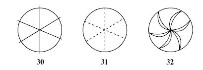

Questions :
Choose the correct letter, A, B,
C or D.
Write your answers in boxes 27 -29 on your answer
sheet.
27 In the first paragraph, the writer makes the point that blind people
A. may be interested in studying art.
B. can draw outlines of different objects and surfaces.
C. can recognise conventions such as perspective.
D. can draw accurately.
28 The writer was surprised because the blind woman
A. drew a circle on her own initiative.
B. did not understand what a wheel looked like.
C. included a symbol representing movement.
D. was the first person to use lines of motion.
29 From the experiment described in Part 1, the writer found that the blind subjects
A. had good understanding of symbols representing movement.
B. could control the movement of wheels very accurately.
C. worked together well as a group in solving problems.
D. got better results than the sighted undergraduates.
Questions 30 -32
Look at the following diagrams
(Questions 30 -32), and the list of types of movement below. Match each diagram to the type of movement A-E
generally assigned to it in the experiment. Choose the correct letter A-E and write them in
boxes 30-32 on your answer sheet.

|
A steady spinning B jerky movement C rapid spinning D wobbling movement E use of brakes |
Questions 33 -39
Complete the summary below using words
from the box. Write your answers in boxes 33 -39 on your answer sheet. NB You may use any word
more than once.
In the experiment described in Part 2, a set of word 33......... was used to investigate whether blind and sighted people perceived the symbolism in abstract 34.......... in the same way. Subjects were asked which word fitted best with a circle and which with a square. From the 35........ volunteers, everyone thought a circle fitted soft while a square fitted hard. However, only 51% of the 36......... volunteers assigned a circle to 37....... . When the test was later repeated with 38........ volunteers, it was found that they made 39........ choices.
|
associations blind deep hard hundred identical pairs shapes sighted similar shallow soft words |
Question 40
Choose the correct letter A, B,
C or D. Write your answer in box 40 on your answer sheet.
Which of the following statements best summarises the writer 's general conclusion?
A The blind represent some aspects of reality differently from sighted people.
B The blind comprehend visual metaphors in similar ways to sighted people.
C The blind may create unusual and effective symbols to represent reality.
D The blind may be successful artists if given the right training.
Click the button to Show/ Hide Answers